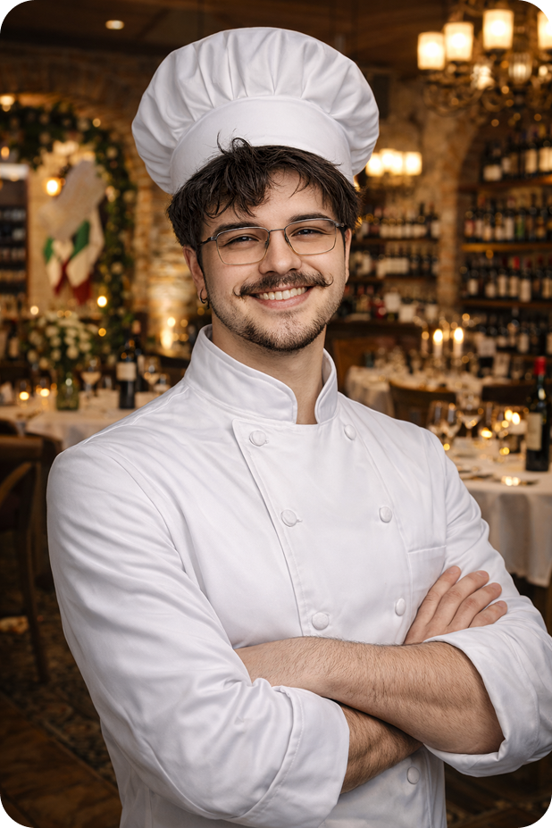

À frente da cozinha do L’ Appetito está o renomado Chef Vitor Arevalone, cuja trajetória é marcada pela dedicação às tradições italianas e pela busca incansável da excelência gastronômica. Formado em escolas culinárias de prestígio e com passagens por cozinhas europeias premiadas, o Chef Vitor transformou sua paixão por sabores autênticos em uma verdadeira expressão artística.
L' APPETITO


Experimente nosso Fettuccine al Limone com Camarões Premium: massa fresca envolvida em um cremoso molho de limão e parmesão, acompanhada de camarões salteados e tomates confitados. Finalizado com manjericão fresco e raspas de limão, é um prato leve, aromático e sofisticado — perfeito para quem aprecia o melhor da cozinha italiana gourmet.
Sobre Nós
Nossa História • Nossa Receita • Nossa Experiência
O L’ Appetito nasceu da paixão pela culinária italiana clássica e da busca pela perfeição em cada detalhe.
Cada prato é preparado com cuidado artesanal, utilizando azeites premiados, massas frescas e ingredientes selecionados diariamente.
Aqui, cada refeição é uma experiência sensorial, onde sabor, ambiente e hospitalidade se encontram em harmonia.

Sobre o Chef
Inspirado pelas raízes mediterrâneas, ele combina técnicas clássicas com criatividade contemporânea, elevando ingredientes simples a experiências memoráveis. Sua filosofia é clara: cada prato deve contar uma história — de origem, de afeto e de identidade.
No L’ Appetito, o Chef Vitor Arevalone guia a equipe com precisão, sensibilidade e respeito ao tempo de cada preparo, garantindo que cada refeição seja não apenas deliciosa, mas digna de celebração. Sob sua liderança, a cozinha se torna um palco onde tradição, inovação e alma italiana se encontram.